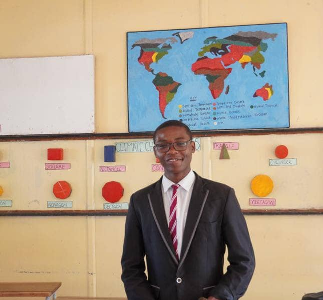

Web Developer |Aspiring Aerospace Engineer| Programmer | Aerodynamic designer .
+260973935674
Embracing all that makes me unique
Hello I am Nduwa Makinka from Zambia, and welcome to my personal blog. I am passionate about Aviation, renewable energy, and climate change. I want to take you on a journey with me as I explore these topics and share my experiences, ideas, and insights on them and more. I hope to inspire and inform you on these topics that interest me. So join me as we explore my passions and multifaceted self. Let's take this journey together!
Unfolding Dreams, COOL

Purpose Driven
Recognized for exceptional academic excellence and outstanding performance in school.
Led a team of innovators and thinkers, fostering a culture of curiosity and exploration in the field of science and technology.
Designed and developed a groundbreaking project that showcased expertise in electrical engineering and physics.
Awarded for being the most deciplined pupil, showcasing my exemplary nature of obediance .
Demonstrated exceptional leadership skills, serving as a role model and mentor to peers while supporting the school administration.
Collaborated with industry experts, gaining insights into the aviation sector and developing a deeper
Contributed to cutting-edge research initiatives, gaining valuable experience in data collection, analysis, and interpretation.
(An Autobiography OF MAKINKA NDUWA)
As I reflect on my life's journey. I am reminded of the power of resilience, determination, and the unwavering support of my loved ones. Growing up, I faced challenges that tested my resolve, but with the guidance of mentors, the love of my family, and my own passion for learning, I discovered my strengths and pursued my dreams.
The Unwavering Support of My Family, At the foundation of my success are my parents. Whose tireless efforts and unwavering support have been the driving force behind my achievements. My mother's fervent prayers and my father's sacrifices have instilled in me the values of hard work, perseverance, and humility. Despite the challenges they faced, they ensured that I had access to quality education, and their love has been a constant source of comfort and motivation. I am forever grateful for their role in shaping me into the person I am today.
A Passion for Learning, My academic journey has been a defining aspect of my life. I developed a strong foundation in science, technology, engineering, and mathematics (STEM), which sparked my interest in aviation, renewable energy, and climate change. As a student, I was driven to excel, and my hard work earned me the nomination as the Most Disciplined Student of the School. This recognition not only reflected my academic discipline but also my commitment to personal growth.
The Impact of Mentors, One of the most significant turning points in my life was when I met Madam Sikazwe. My science teacher and mentor. She saw potential in me and entrusted me with responsibilities that helped me grow both academically and personally. Her guidance and support enabled me to develop a deeper understanding of complex scientific concepts and build meaningful relationships with my peers. Msr Sikazwe's impact on my life extends beyond the classroom; she taught me the value of humility, hard work, and the importance of giving back to my community.
Faith and Values, The role of faith and values in my life has been a profound and transformative experience, providing me with a sense of purpose, direction, and strength. My relationship with God has been a cornerstone of my journey, and the values instilled by my mentors, particularly Dr. PastozxSZxvcbcqDr Mighty Zunga, have had a lasting impact on my life. Through faith, I've experienced spiritual growth, gained a moral compass, developed purpose and direction, and cultivated resilience and perseverance. My faith and values have shaped my worldview, informed my decisions, and given me a sense of purpose, and I am grateful for the impact they have had on my life, looking forward to continuing to grow and develop in these areas.
Leadership and Personal Growth, Throughout my high school years. I had the opportunity to take on leadership roles, including serving as the President of the Science Club, Jets, and Deputy Head Boy of the School. These experiences taught me the value of teamwork, communication, and problem-solving. I also had the chance to work on innovative projects, such as the Tesla Auxiliary Coil Science Project, which showcased my passion for science and technology.
The Power of Community, My journey has been enriched by the people I have met along the way. Dr. Pastor Mighty Zunga, Introduced me to the love of the gospel and the importance of faith. Msr Sikazwe, who help me build my foundation in my love for science. Madam Mwenya, who organized an astronaut appearance conference, inspired me to pursue my dreams in space exploration. Kim Mwandaba Mwanya and Emmanuel Sikazwe, my friends and peers, supported me through thick and thin, and I am grateful for their friendship.
A Bright Future Ahead,As I look to the future, I am excited to continue pursuing my passions and making a positive impact in the impact in the world. I believe that education is key to unlocking human potential, and I am committed to contributing to the betterment of our education system in Zambia. My experiences have taught me that it takes a village to raise a great leader, and I am grateful for the people who have supported me on this journey.
TOGETHER WE CHANGE OUR WORLD
Discover the inspiring journey of a passionate leader, innovator, and academic achiever. From serving as Deputy Head Boy and transforming school libraries to conducting groundbreaking research at Kenneth Kaunda International Airport and the Ministry of Minds, this is a story of curiosity, resilience, and impact. Explore how these experiences have shaped a vision for Zambia's future, fueled by technology, service, and the power of possibility
THE LORDS PRIDE AND JOY